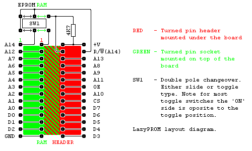
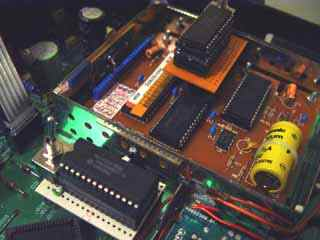

![[Return to top]](../../epc.png)
LazyPROM by Lee Davison
[Back]
Even with a new EPROM eraser that can handle 14 EPROMs at once I got fed up going through the program/test/erase cycle that is part of developing code.I did think, briefly, of building a full featured EPROM emulator, but that was far too much like work. There had to be an easier way.
As I have a few old Dallas smart sockets kicking about I decided that one of them, with a 32k low power CMOS RAM, would be ideal.
The circuit is very simple. The pinout for a standard 32k ROM and standard 32k EPROM differ on only two pins. This means most of the circuit is just pin for pin connections as can be seen in the diagram below.

With the switch in the 'RAM' position all the pins are connected pin to pin and the RAM can be programmed either in a programmer or as part of a microprocessors main memory.Construction.With the switch in the 'EPROM' position the RAM's R/W line is disconnected from the header and pin 27 on the header is now connected to the RAM's A14 pin. This makes the RAM chip look like a 32k EPROM to the target socket.
The whole thing was put together on a small piece of prototyping board in well under an hour. The most dificult part was soldering the headers to the track side of the board.Note - Don't be tempted to use anything but hard, gold, turned pin header pins for the header. The, easier to find, square pins will either not fit, or damage, most IC sockets and the cheaper tinned header pins will be damaged more easily during use.
In use.
As no special voltages or timings are needed to program the RAM in the smart socket it would be fairly easy to make a programmer for this, if you don't already have something suitable.The Dallas smart socket is supposed to retain RAM contents for up to 10 years but the ones I have, being very second user, are an unknown quantity. They certainly work for a week or so though one was originally completely dead and required some surgery to replace both batteries. More on that elsewhere.
The first one I built proved to be so usefull that I've since built another and both have proved invaluable in hacking the Ferguson SRB1 DMAC receiver.

![[e-mail]](../../eml_sm.png)